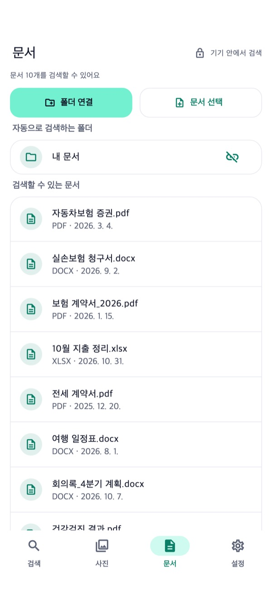

문서 찾기
1. 처음 한 번: 문서 폴더 연결
PDF, 워드(DOCX), 엑셀(XLSX), CSV, 텍스트(TXT) 문서를 제목과 내용으로 찾습니다. 문서는 휴대폰 안에서만 읽고 어디에도 올리지 않습니다.
- 아래 "문서" 탭을 누르세요.
- "폴더 연결"을 누르고 문서가 있는 폴더를 고르세요. 새로 들어온 문서도 자동으로 추가됩니다.
- "문서 선택"으로 파일을 하나씩 추가할 수도 있습니다.
- 아이폰: "파일" 앱의 "나의 iPhone" 안에 있는 폴더를 고를 수 있습니다.
- 안드로이드: "Documents" 폴더를 추천합니다. Download 폴더 자체는 안드로이드 정책상 연결할 수 없습니다. Download 안에 새 폴더를 만들어 문서를 옮긴 뒤 그 폴더를 연결하세요.

2. 문서를 정확히 찾는 요령
먼저 띄어 써서 찾으세요. 문서에 적힌 문구 그대로 찾아서 딱 맞는 문서가 나옵니다. 결과가 적으면 마침표로 나눠 보세요.
- 예:
보험 계약서→ 결과가 적으면계약서. 김민지 - 말로 찾을 때 "계약서 문서"처럼 "문서"를 붙이면 문서만 찾습니다.
- 폴더 연결을 해제해도 원본 파일은 지워지지 않습니다.